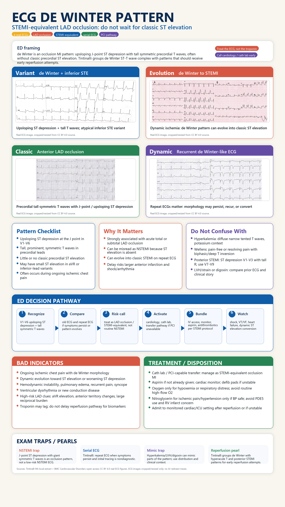

source_extracts\ecg_de_winter_pattern_tintinalli9_extract.txt. This poster was composed from real ECG images with deterministic layout; ECG tracings were not generated or redrawn by image_gen.- de Winter + inferior STE variant: Figure 1 from de Winter syndrome or inferior STEMI?, Shijun Wang; Liang Shen, DOI 10.1186/s12872-021-02441-4, Creative Commons Attribution 4.0 International (CC BY 4.0)
- de Winter evolving to STEMI: Figure 1 from Evolutionary de Winter pattern: from de Winter ECG to STEMI-A case report, Hao Wang; Xiao-Ce Dai; Yun-Tao Zhao; Xiao-Hang Cheng, DOI 10.1186/s12872-020-01611-0, Creative Commons Attribution 4.0 International (CC BY 4.0)
- classic anterior de Winter pattern: Figure 1 from An emergency ECG sign of ST elevation myocardial infarction, Baoze Qu; Guizhou Tao; Renguang Liu, DOI 10.1186/s12872-019-1109-0, Creative Commons Attribution 4.0 International (CC BY 4.0)
- dynamic/recurrent de Winter-like pattern: Figure 6 from An emergency ECG sign of ST elevation myocardial infarction, Baoze Qu; Guizhou Tao; Renguang Liu, DOI 10.1186/s12872-019-1109-0, Creative Commons Attribution 4.0 International (CC BY 4.0)
Images were cropped/resized for presentation and credited here; source metadata is saved at assets/source-ecg-images/ecg_image_sources.json.